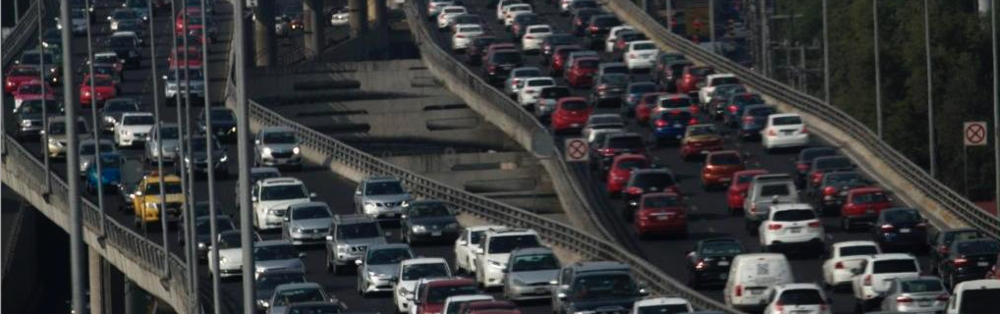

Introducción
En la Ciudad de México, según la Secretaría de Movilidad, ocurren en promedio 37.6 incidentes de tránsito diarios, resultando en la muerte de una o dos personas cada día . Esta situación afecta significativamente a toda la sociedad y la mayoría de estos incidentes son prevenibles y pueden ser menos graves.
La seguridad vial es una responsabilidad compartida, pero los incidentes afectan principalmente a los usuarios más vulnerables, como peatones y ciclistas. Estas personas enfrentan barreras que limitan su seguridad en una ciudad que debería ser accesible e inclusiva. Por ello, las políticas de movilidad deben priorizar su protección y bienestar.
Es fundamental que las políticas de seguridad vial promuevan la conciencia, el respeto y la tolerancia hacia todos los usuarios de la vía. La convivencia vial debe fomentar conductas ordenadas y respetuosas, permitiendo la resolución pacífica de tensiones entre diferentes modos de transporte.
Diariamente, en la Ciudad de México, los automóviles están involucrados en el 48.5% de los incidentes de tránsito, a pesar de representar solo el 22% de los viajes diarios. Las motocicletas, que han crecido significativamente en número, están involucradas en el 32.8% de los incidentes, con una alta tasa de participación relativa a su uso. Los motociclistas tienen una probabilidad mucho mayor de sufrir incidentes en comparación con los ciclistas, automovilistas y usuarios de transporte público.
Las principales causas de accidentes viales incluyen tres factores clave:
- Infraestructura y programas: Han favorecido a los vehículos automotores, sin considerar a peatones y ciclistas, aumentando su riesgo.
- Infracciones al Reglamento de Tránsito: Muchas infracciones como el exceso de velocidad, el uso de celulares y la conducción bajo el alcohol son comunes en accidentes, especialmente de noche y en fines de semana. En 2019, el 91.5% de las multas fueron por exceso de velocidad (SEMOVI, 2019).
- Dispersión de responsabilidades: La dispersión de responsabilidades en varias secretarías e instituciones ha dificultado la coordinación de las políticas de seguridad vial, con la SEMOVI y la SSC como principales, pero no únicas, responsables.
A continuación se muestra un gráfico mostrando los accidentes más comunes en la Ciudad de México:
Análisis Exploratorio de Datos (AED)
Tipos de Accidentes en la Ciudad de México
Contexto en otras ciudades
Varias ciudades similares a la Ciudad de México han implementado estrategias efectivas para enfrentar problemáticas relacionadas con la infraestructura vial, infracciones de tránsito y la coordinación institucional:
- São Paulo: La reducción de límites de velocidad en avenidas principales y la mejora de la infraestructura para peatones y ciclistas han disminuido la exposición al riesgo de los usuarios vulnerables.
- Buenos Aires: Ha adoptado un enfoque integral con su Plan de Seguridad Vial, que incluye controles de alcoholemia y campañas de concienciación, reduciendo significativamente los accidentes.
- Bogotá: La creación de zonas de bajas emisiones y el aumento de la vigilancia policial han sido cruciales para mejorar la seguridad vial, mientras que la promoción del uso de bicicletas ha incentivado una movilidad más segura y sostenible.
- Los Ángeles y Nueva York: el programa Vision Zero ha sido fundamental en la reducción de accidentes viales. Ambas ciudades han implementado medidas como la reducción de límites de velocidad, el rediseño de intersecciones peligrosas y la aplicación estricta de las leyes de tránsito. Además, han mejorado la coordinación entre diferentes agencias gubernamentales para asegurar una respuesta más eficaz a los incidentes de tránsito.
Estas acciones no solo han disminuido el número de accidentes, sino que también han mejorado la calidad de vida al promover una convivencia vial más segura y respetuosa. La experiencia de estas ciudades demuestra que una combinación de infraestructura adecuada, políticas estrictas y una buena coordinación institucional puede llevar a una significativa reducción de los accidentes viales y a una mayor seguridad para todos los usuarios de la vía.
Resultados de la Implementación en la Ciudad de México
En la Ciudad de México, se ha implementado un sistema de cámaras de velocidad en puntos estratégicos como parte del programa Fotocívicas. Esta medida ha tenido un impacto significativo en la reducción de accidentes.
- Reducción de Accidentes: Según un estudio de Alcaraz y Anaya (2024), la instalación de cámaras de velocidad ha reducido los accidentes en un 16%.
- Comparación con Otros Estudios: Estos resultados son consistentes con investigaciones previas realizadas en otras ciudades, como estudios realizados en India que muestran una reducción del 15%, o un estudio hecho en Jordania que reportó una reducción del 10-19%.
- Metodología: El estudio utilizó métodos de matching para asegurar la validez de los resultados, ajustando los datos por ingresos de parquímetros para considerar el volumen de tráfico.
Los resultados indican que la implementación de cámaras de velocidad es una medida efectiva para mejorar la seguridad vial. La evidencia sugiere que una política de expansión de estas cámaras podría seguir reduciendo los accidentes de tránsito en la ciudad.
Ubicación de las Cámaras en la Ciudad de México
¡Actúa Ahora!
Impacto y Perspectivas Futuras
La seguridad vial en la Ciudad de México es un desafío que demanda acciones integrales y coordinadas. La implementación de cámaras de velocidad ha demostrado ser una medida efectiva para reducir los accidentes, pero es solo una pieza del rompecabezas.
- Infraestructura Vial: Mejorar las calles y avenidas para hacerlas más seguras para todos los usuarios, incluyendo peatones y ciclistas, es fundamental.
- Campañas de Concienciación: Promover el respeto y la tolerancia en las vías públicas a través de campañas educativas puede cambiar comportamientos y salvar vidas.
- Aplicación de Leyes de Tránsito: Reforzar la aplicación de las leyes existentes y asegurar que las infracciones se sancionen adecuadamente.
- Movilidad Activa: Fomentar el uso del transporte público y medios de movilidad activa como la bicicleta para reducir el número de vehículos en las calles y, por ende, los accidentes.
- Coordinación Interinstitucional: Mejorar la colaboración entre las distintas autoridades encargadas de la seguridad vial para una respuesta más eficaz a los incidentes.
A lo largo de este proyecto, hemos enfrentado y superado diversos desafíos técnicos y narrativos. Seleccionar los datos más relevantes, diseñar visualizaciones impactantes y estructurar una narrativa coherente han sido tareas cruciales. La integración de distintas herramientas de visualización y la presentación de datos en un formato accesible ha sido una experiencia enriquecedora.
Nuestro objetivo es que esta narrativa no solo informe, sino que también inspire a los lectores a tomar acciones concretas para mejorar la seguridad vial en nuestra ciudad. La evidencia es clara: la implementación de cámaras de velocidad, combinada con otras medidas, tiene el potencial de transformar significativamente nuestras vías y salvar vidas.
¡Involúcrate!
Tu participación es crucial para la seguridad vial de nuestra comunidad. Apoya la expansión del programa Fotocívicas y contribuye a un futuro más seguro para todos.